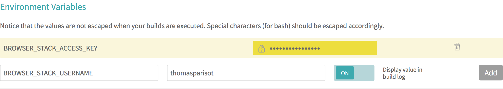

Node et l’écosystème npm sont devenus des acteurs majeurs de l’outillage
web front-end alors profitons-en pour partager du code entre client et serveur.
-
Polyfills et compatibilité ECMAScript
-
Importer des modules
npmpour le Web -
Créer du code modulaire, avec ou sans framework
-
Échanges de données en temps réel
-
Outillage utile au quotidien
-
Tester son code et la compatibilité avec les navigateurs web
Avant l’apparition de Node, rare était l’outillage n’imposant pas une ou plusieurs plates-formes de développement : YUICompressor demandait Java, Google Closure Compiler demandait Java, sprockets Ruby et pngquant quelques dépendances système comme libpng.
L’existence de Node et du registre
npma favorisé le développement d’un écosystème orienté front-end plus simple à appréhender. Cela s’étend de la découverte au téléchargement des bibliothèques tierces ainsi qu’à la compilation, l’optimisation et l’exécution des tests des applications web côté client.Cet écosystème rend l’écriture de code moderne normale ; un code anticipant les futurs standards d’ECMAScript et HTML5, sur les navigateurs actuels et anciens.
|
💬
|
Remarque Versions de Node et npm
Le contenu de ce chapitre utilise les versions Node v10 et npm v6. Ce sont les versions stables recommandées en 2018. |
1. Quel rapport entre Node et les navigateurs web ?
Ce chapitre peut sembler confus au premier abord.
Si Node s’exécute au niveau du système d’exploitation – “côté serveur” – en quoi
est-il lié au développement front-end – “côté client” ?
Est-ce parce que du code écrit pour Node peut aussi fonctionner dans un navigateur web ?
Quid de l’utilisation de require('fs') pour accéder au système de fichiers ?
La réponse courte est : nous n’exécutons pas Node dans un navigateur.
Et voici la réponse longue : Node est utilisé pour assembler du code, le transformer
et le rendre fonctionnel dans une paire de balises <script></script>.
Ce code peut aussi aussi bien être fourni par des bibliothèques tierces
installées via npm (jQuery, React ou d3 par exemple) que par de
l’outillage (optimiseurs, suite de tests, orchestration de tâches) ou encore
par le code réutilisable de notre propre application web.
Il faut également bien comprendre qu’il y a plusieurs “problèmes” cachés sous une même question :
-
Les navigateurs et Node utilisent différentes machines virtuelles JavaScript, implémentant ECMAScript de façon plus ou moins complète.
-
Ils n’ont pas accès aux mêmes APIs – Node accède à
fsethttptandis que les navigateurs ontFileetfetch/XmlHttpRequest. -
Ils ne gèrent pas le chargement de modules de la même manière (voir la section “Gestion des dépendances”).
-
L’implémentation même d’ECMAScript diffère selon les versions de Node employées – un navigateur moderne et Node v10 comprennent l’objet natif
Promise, mais pas Node 0.12.
Ce processus n’est pas magique et nous verrons graduellement au cours des prochaines sections comment tout ceci fonctionne.
|
💡
|
Pratique Jouer avec les exemples dans un terminal
Les exemples titrés d’un nom de fichier peuvent être installés sur votre ordinateur. Exécutez-les dans un terminal et amusez-vous à les modifier en parallèle de votre lecture pour voir ce qui change. Installation des exemples via le module npm
nodebooknpm install --global nodebook nodebook install chapter-09 cd $(nodebook dir chapter-09) La commande suivante devrait afficher un résultat qui confirme que vous êtes au bon endroit : node hello.js Suivez à nouveau les instructions d’installation pour rétablir les exemples dans leur état initial. |
2. Écrire dès à présent le code du futur
Transformer du code ECMAScript a pendant longtemps été chose pénible. Je pense par exemple à de la minification de code (pour réduire les temps de transfert sur les antiques lignes ADSL 128 K) ou à de la conversion automatique de code ECMAScript 3 en ECMAScript 5. Cela nécessitait systématiquement l’utilisation d’un autre environnement qu’ECMAScript lui-même: Rhino nécessitait Java, Spidermonkey nécessitait C++ et Trident nécessitait un environnement Windows en plus de C++.
esprima (npmjs.com/esprima) chamboule les règles du jeu en décembre 2011 : ce parseur ECMAScript – lui-même écrit en ECMAScript – exporte une compréhension de code sous forme d’arbre syntaxique abstrait (Abstract Syntax Tree, AST). Cet arbre est lui-même analysable par de nouveaux outils :
-
les source maps pour associer le code transformé au code d’origine, notamment dans les outils de développement des navigateurs ;
-
des minifieurs plus efficaces et ayant connaissance des portions de code exécutées ;
-
des analyseurs de code pour informer le développeur d’erreurs de syntaxe, de non-respect de styles de développement, etc. ;
-
des convertisseurs de code pour passer d’ECMAScript vers CoffeeScript, de modules CommonJS vers des modules ECMAScript, etc.
|
💡
|
Lien Annonce d’esprima
Aryia Hidayat présente esprima dans ce billet de blog : Il y présente notamment des comparatifs de performances d’exécution sur différentes machines virtuelles ECMAScript et face à d’autres parseurs. |
2.1. La fin de l’approche par le dénominateur commun
Qui n’a pas déjà entamé un projet en posant la question à un client, en regardant les statistiques de trafic ou en se posant une question à soi-même : quelles sont les versions de navigateurs avec lesquelles notre site ou application web doit être compatible ?
La version de navigateur la plus ancienne ou la moins conforme aux standards était celle qui donnait le la. Cela voulait dire se priver de techniques modernes, standardisées ou en cours de standardisation. Cela signifiait des hacks dans ses CSS, dans son code ECMAScript et dans ses ressources graphiques.
2.2. Écrire au plus proche des standards
Fort heureusement, l’arrivée d'esprima change la donne et permet d’écrire un code proche des standards qui résiste au temps. Son existence facilite l'émergence d’outils automatisant les transformations de code pour satisfaire nos besoins spécifiques.
Il y a plusieurs éléments à prendre en compte concernant la standardisation de nouvelles versions d’ECMAScript et les évolutions de sa syntaxe :
-
La cadence de standardisation a été revue pour devenir prédictible – une volonté d’une fois par an.
-
Les fonctionnalités et éléments de syntaxe sont implémentés un par un, à des vitesses différentes par les différents navigateurs.
-
Deux tiers de navigateurs fonctionnent sur des rythmes de mise à jour en cycle court (de six à neuf semaines) – le tiers restant est cadencé à une seule mise à jour par an.
Il vaut mieux parier sur les standards comme stratégie à long terme si on tient compte du temps de développement et du temps de maintenance d’une base de code.
|
💡
|
Question Standards, quels standards ?
Plusieurs organismes prennent part à la standardisation de langages et d’API lorsque l’on touche aux navigateurs :
|
Lorsque nous écrivons du code, nous pouvons rencontrer trois cas de figure :
-
élément de syntaxe non implémenté : transformer le code pour l’adapter aux navigateurs cibles ;
-
élément de syntaxe partiellement implémenté : utiliser l’implémentation native des navigateurs et, à défaut, transformer le code pour l’adapter aux autres navigateurs ;
-
élément de syntaxe totalement implémenté : utiliser l’implémentation native des navigateurs.
Il arrive que certains éléments de syntaxe soient abandonnés pendant le
processus de standardisation – ou que leur implémentation change beaucoup
(on pensera à Object.observe).
La question qui nous taraude est : comment transformer le code pour satisfaire à la fois les navigateurs compatibles et les autres ? Babel (babel.io) est un outil de choix pour parvenir à ces fins d’écriture de code résistant au(x standards du) temps.
Ce module convertit de manière sélective toute syntaxe ECMAScript 2015/2016/etc. vers de l’ECMAScript 5, compréhensible par les navigateurs modernes. L’intérêt de sa sélectivité fait que l’on peut progressivement arrêter de convertir les éléments de syntaxe couverts par 100 % des navigateurs.
|
💡
|
Histoire Traceur
Traceur est un des premiers transpilateurs ECMAScript 2015 vers ECMAScript 5 à avoir émergé dans l’écosystème Node. Grâce à lui, il a été possible d’écrire des modules en ECMAScript 2015 bien avant que la spécification ne soit entièrement terminée et donc on a pu anticiper son apprentissage tout en mettant le langage à l’épreuve avant sa finalisation. |
L’exemple suivant illustre un code utilisant des éléments de syntaxe d’ECMAScript 2018.
const a = {one: 1, two: 2};
const b = {three: 3, four: 4};
console.log({...a, ...b}); (1)-
Affiche
{ one: 1, two: 2, three: 3, four: 4 }si le navigateur supporte l’opérateur spread sur les objets (chapitre 3).
Ce code représente l’idéal de ce que l’on souhaite écrire. Le seul obstacle consiste à traduire ce code pour l’ensemble des navigateurs compatibles avec ECMAScript 5.
Exécutons cette commande :
npm run babel -- examples/babel/es2018.js
La sortie a changé et renvoie un code totalement fonctionnel sur des navigateurs ne prenant pas ECMAScript 2018 en charge :
"use strict";
function _objectSpread(target) { for (var i = 1; i < arguments.length; i++) { var source = arguments[i] != null ? arguments[i] : {}; var ownKeys = Object.keys(source); if (typeof Object.getOwnPropertySymbols === 'function') { ownKeys = ownKeys.concat(Object.getOwnPropertySymbols(source).filter(function (sym) { return Object.getOwnPropertyDescriptor(source, sym).enumerable; })); } ownKeys.forEach(function (key) { _defineProperty(target, key, source[key]); }); } return target; }
function _defineProperty(obj, key, value) { if (key in obj) { Object.defineProperty(obj, key, { value: value, enumerable: true, configurable: true, writable: true }); } else { obj[key] = value; } return obj; }
var a = {one: 1, two: 2};
var b = {three: 3, four: 4};
console.log(_objectSpread({}, a, b));Chaque fonctionnalité d’ECMAScript est transformée selon une règle personnalisable,
intégrée à Babel ou disponible sous forme d’un plug-in.
Les presets sont des modules npm qui regroupent les règles
de transformation selon un certaine logique.
preset-env npmjs.com/babel-preset-env convertit notre code dans une version compatible avec la majorité des navigateurs supportés sur le marché. Si vos besoins sont différents, sa configuration sait cibler des navigateurs en fonction soit de leur version, soit de leur part de marché.
La configuration des presets et d’autres aspects de Babel se fait
dans un fichier nommé .babelrc.
L’exemple suivant configure Babel pour préserver les commentaires,
transformer la syntaxe JSX pour React et transformer pour les
dernières versions des navigateurs sur le marché :
{
"comments": false,
"presets": [
"@babel/preset-react",
"@babel/preset-env"
],
"plugins": [
"@babel/plugin-proposal-object-rest-spread"
]
}
|
💡
|
Lien Documentation de Babel
Toutes les options de configuration sont documentées sur le site officiel de Babel : babeljs.io/docs/en/babel-core/#options. Une autre page explique où placer et quoi mettre dans les fichiers
|
2.3. Combler les manques avec des polyfills
Des outils comme Babel nous permettent d’écrire avec une syntaxe moderne qui comblent les fonctionnalités manquantes – leur implémentation.
Un polyfill harmonise la présence d’une fonctionnalité au sein d’une variété de navigateurs et d’environnements ECMAScript. Cela se fera au détriment de quelques kilo-octets de code à charger en plus dans nos applications. L’appel à un service de polyfill externe entraîne un léger ralentissement du chargement de notre page.
Prenons le bloc de code suivant :
'use strict';
Promise.resolve('ok');Comprenons que :
-
Cette syntaxe est valide dans toutes les versions d’ECMAScript (Babel ne change rien à ce code).
-
L’objet global
Promiseexiste dans un navigateur moderne. -
L’objet global
Promisen’existe pas dans Internet Explorer 11, entre autres.
Ce code fonctionnerait donc sur un navigateur moderne mais pas dans IE11.
L’inclusion d’un polyfill de Promise résoudrait le problème.
|
💡
|
Bonne pratique Quand inclure les polyfills ?
Un polyfill se charge toujours en premier. On incluet tous les polyfills d’un coup avant notre propre code. Nous garantissons ainsi cohérence et stabilité de comportement au sein de notre application, peu importe l’ordre d’exécution de nos scripts. |
Parlons maintenant des méthodes d’inclusion des polyfills pour mieux comprendre comment procéder.
Le service polyfill.io est de loin la méthode la plus simple à utiliser. Il suffit d’inclure un script dans toutes vos pages web et cet outil détermine les polyfills à charger en fonction de la compatibilité du navigateur :
<!DOCTYPE html>
<html>
<head>
<title>Example polyfill.io</title>
<script src="https://cdn.polyfill.io/v2/polyfill.min.js"></script>
</head>
<body>
<script>
Promise.resolve('ok')
.then(msg => console.log(msg));
</script>
</body>
</html>|
💡
|
Documentation polyfill.io
polyfill.io possède une documentation très complète qui aide à configurer finement le service en fonction de nos besoins : |
Nous pouvons déduire deux règles de cet exemple :
-
Inclure les polyfills en tout premier.
-
Les inclure en dehors de notre code.
La deuxième méthode est d’embarquer les polyfills dans notre base de code. L’avantage est de maîtriser notre base de code et de ne pas dépendre d’un service externe. L’inconvénient est que nous chargeons du code qui sera inutile dans les navigateurs et environnements disposant déjà de ces fonctionnalités :
<!DOCTYPE html>
<html>
<head>
<title>Exemple polyfill custom</title>
<script type="module">
import 'es6-promise/auto'; (1)
import 'core-js/fn/number/is-nan';(2)
</script>
</head>
<body>
<script>
Promise.resolve(Number.isNaN(NaN))
.then(msg => console.log(msg));
</script>
</body>
</html>-
Nous verrons comment importer des modules ci-après.
-
On importe un deuxième polyfill, celui de la méthode
Number.isNaN.
Le module npm core-js est une bibliothèque exhaustive de polyfills
pouvant être inclus un à un ou par versions d’ECMAScript.
|
💡
|
Documentation core-js
La documentation en ligne de |
|
⚠️
|
Attention Performance et duplication
Il faut veiller à ne pas alourdir inutilement une application. Laissons la responsabilité de polyfiller aux utilisateurs de notre code ;
particulièrement si celui-ci est redistribué en tant que module Si plusieurs scripts nécessitent des polyfills, mieux vaut inclure ces derniers en une fois : |
Enfin, une dernière méthode est d’importer la fonction de polyfill sans réécrire les objets globaux. Cette pratique a l’avantage de ne pas entraîner d’effets secondaires et de garantir le même comportement dans tous les navigateurs. L’inconvénient est qu’on n’utilise pas la fonctionnalité native des navigateurs lorsqu’elle est présente. Nous nous retrouvons tributaires de la qualité d’implémentation du polyfill.
import {Promise as PromisePolyfill} from 'es6-promise';
PromisePolyfill.resolve('ok').then(msg => console.log(msg));
console.log('Promise' in window); (1)
console.log(PromisePolyfill === window.Promise); (2)-
Affiche
truesi le navigateur implémente l’API Promise – sinon affichefalseet l’utilisation d’un polyfill prend tout son sens. -
Affiche
false, car le polyfill de Promise est une fonction strictement différente dewindow.Promise.
|
💡
|
Guide Bonnes pratiques constatées
De bons usages des polyfills ainsi les risques liés à leur utilisation sont compilés dans un guide édité par le W3C : |
3. Importer des modules
Importer des modules est une pratique courante avec Node. Elle l’est en revanche beaucoup moins dans l’univers du Web puisqu’il n’existait rien de natif avant les modules ECMAScript.
Auparavant, on aura vu débarquer les modules AMD (Asynchronous Module Definition) pour gérer les dépendances entre scripts. Les bibliothèques Dojo, RequireJS et YUI ont popularisé ce motif de conception. Un désir d’universalité a ensuite émergé avec le gain de popularité croissant de Node, conduisant aux modules UMD, conciliant AMD et CommonJS.
Les modules ECMAScript ont émergé de ce bouillonnement.
3.1. La balise <script>
Rappelons-le, la méthode incontournable pour charger du code dans un navigateur
est l’utilisation de la base <script>.
Le chargement, l’évaluation et l’exécution du script bloquent le temps
nécessaire au rendu d’un document HTML.
<script src="global-dom-log.js"></script>
<script src="script.js"></script>
<div id="logs"></div>Les différents scripts partagent le même espace mémoire, permettant ainsi à
script.js d’avoir accès à la fonction log définie dans global-dom-log.js.
const log = (message) => {
const text = String(message).trim();
document.querySelector('#logs').textContent = text;
};/* global log */
window.addEventListener('load', () => {
log('OK');(2)
});
log('KO'); (1)-
Affiche une erreur car
<div id="logs">n’existe pas encore dans le document à ce stade de l’exécution. -
Cette ligne est exécutée une fois le document chargé –
<div id="logs">contient désormais le texteOK.
S’il est facile d’ajouter du code dans le navigateur, on constate plusieurs problèmes :
-
Partager du code entre scripts repose sur une attente explicite.
-
Le partage de variables entre scripts risque d’entraîner des collisions (par exemple, deux variables du même nom définies dans des scripts différents).
-
Il n’y a pas de moyen évident de rendre des parties de code privées au sein de chaque script.
Le développement front-end basé sur de l’outillage Node va justement nous aider à solidifier et renforcer la réutilisabilité de notre code.
3.2. Les modules ECMAScript
Nous avons évoqué les primitives ECMAScript 2015 dans le chapitre 3. Les modules font partie des fonctionnalités tant attendues.

L’attribut type="module" sert à maintenir une compatibilité entre les scripts
classiques et les modules ECMAScript.
Ce mécanisme s’appuie sur plusieurs concepts importants :
-
Toute variable est privée sauf si elle est exportée avec l’opérateur
export. -
Les modules sont explicitement inclus avec l’opérateur
import. -
Les variables globales définies par l’utilisateur ne sont pas accessibles depuis un module.
Retravaillons le document HTML de la section précédente :
<script>const pro = 'test';</script>
<script type="module" src="script-import.js"></script>
<div id="logs"></div>Nous voulons maintenant (sa)voir si la variable pro définie avant l’inclusion
du module script-import.js est accessible.
Nous voulons également savoir si la syntaxe d’import de la fonction log fonctionne :
import {log} from './dom-log.js';
console.log(typeof pro); (1)
console.log(typeof log); (2)
console.log(typeof window); (3)
window.addEventListener('load', () => {
log('OK');
});-
Affiche
undefined. -
Affiche
function. -
Affiche
object.
De même que nous avons utilisé import pour importer de manière sélective une
fonction du module dom-log.js, l’opérateur export nous aide à exposer des
objets, fonctions et variables :
export function log(message, target = '#logs') {
const text = String(message).trim();
document.querySelector(target).textContent = text;
}3.3. Importer des modules npm pour le Web
Qu’en est-il alors des modules npm ?
Nous pouvons transpiler et importer du code.
Ce serait très utile si nous pouvions également importer du code tiers.
Cela nous éviterait de réinventer la roue, nous donnerait accès à du code bien testé
et trop coûteux à écrire nous-mêmes.
Nous avons vu comment charger des modules npm
dans le chapitre 5.
Intéressons-nous à leur utilisation dans le contexte d’une application front-end.
Pour cela, adaptons l’exemple de la section précédente :
import $ from 'jquery';
console.log($.fn.jquery); (1)
$(document).ready(() => {
$('#logs').text('OK'); (2)
});-
$.fn.jquerycontient le numéro de version de jQuery. -
Substitut jQuery pour remplacer le texte dans
<div id="logs">.
Le document HTML chargeant ce module est en tout point similaire au précédent exemple :
<script type="module" src="script-import-jquery.js"></script>
<div id="logs"></div>Le seul hic, c’est que cela ne fonctionne pas :
-
Le navigateur ne peut pas savoir où se trouve la dépendance demandée.
-
Rien ne garantit que
jqueryexpose son code en tant que module ECMAScript. -
On n’a certainement pas envie d’exposer publiquement le répertoire
node_modules.
C’est alors qu’entre en jeu browserify. browserify est un outil générique de transformation de code. Il peut être utilisé en ligne de commande, via son API Node, mais aussi par le biais de plug-in pour d’autres outils (comme Gulp ou Grunt).
browserify a été initialement créé pour transformer du code écrit pour Node en code fonctionnel dans les navigateurs. Il expose notamment un concept d’intégrations (les transforms) afin d’effectuer des remplacements ligne à ligne.
Là où Babel cherche uniquement à traduire un langage vers un autre, browserify est le couteau suisse pour effectuer des remplacements majeurs dans le code :
-
portage de la fonction
require()et inclusion du code des modules sous-jacents ; -
suppression de code conditionnel ;
-
remplacement d’API spécifiques à Node par des polyfills pour le Web ;
-
extraction de CSS ;
-
etc.
browserify est intéressant au sens où il nous apprend à nous constituer notre outillage, pour nos propres besoins.
|
💡
|
Guide Utiliser browserify
browserify (npmjs.com/browserify) est un outil extrêmement adaptable, modulaire et puissant. Son apprentissage progressif peut faire de lui un allié de choix dans tous vos projets Node et Web. |
Revenons maintenant à notre code auquel il manque la compréhension des
modules npm.
Nous allons maintenant chercher à transformer le fichier script-import-jquery.js,
non seulement pour rendre la syntaxe import intelligible
(c’est le rôle de Babel), mais aussi pour faire le
lien avec les modules npm :
npm run browserify -- \ -t babelify \ -e examples/import/script-import-jquery.js \ -o examples/import/script-import-jquery-browserify.js
Cette commande exécute trois choses :
-
-t babelifyindique d’utiliser une intégration Babel (un transform) pour transformer la syntaxe ECMAScript 2015. -
-e …indique le script d’entrée à transformer. -
-o …indique où stocker le script transformé.
Il en résultera un fichier nommé script-import-jquery-browserify.js compatible
ECMAScript 5 et qui inclut désormais le code source de jQuery.
Il ne nous reste plus qu’à charger le fichier transformé dans notre page web pour voir le résultat :
<script src="script-import-jquery-browserify.js"></script>
<div id="logs"></div>3.4. Récapitulatif
En résumé, nous avons besoin de nous baser sur deux ou trois outils pour écrire un code modulaire et compatible avec n’importe quel type de syntaxe :
-
Babel pour transformer la syntaxe ;
-
des polyfills pour harmoniser les fonctionnalités ;
-
browserify pour l’intégration avec les modules
npm.
Ceux-ci ont l’avantage d’être faciles à prendre en main, modulaires et évolutifs. Nous pourrons aussi nous tourner vers d’autres outils de transformation de code pour explorer d’autres horizons – et il en existe énormément : webpack, rollup, broccoli, etc.
4. Conception modulaire
Un autre paradigme change avec la mise à disposition des modules et de l’outillage : le code que l’on écrit dépend surtout d’ECMAScript et de l’environnement dans lequel on l’exécute, à savoir Node ou un navigateur.
La section suivante s’intéresse à l’évolution de l’écriture du code, autrefois dirigée par la structure du document HTML, vers un monde de fonctions consommant des données, transformées pour un type d’affichage, que ce soit HTML ou autre.
Nous illustrerons cette évolution au travers d’un exemple relativement simple : une balise HTML affichant l’heure dont nous actualisons le contenu toutes les secondes.

|
💡
|
Documentation jQuery
Les exemples suivants se basent sur l’utilisation de la bibliothèque jQuery (api.jquery.com). Elle facilite la manipulation du DOM tout en gérant les incompatibilités des différents navigateurs. Son utilisation est devenue moins dominante du fait d’une nette amélioration de la qualité de ces derniers. |
4.1. Le syndrome du plug-in jQuery
Ce que j’appelle le “syndrome du plug-in jQuery”, c’est une combinaison des éléments suivants :
-
création de code métier inutilisable en dehors de jQuery ;
-
mélange de la présentation des données et de l’organisation du code métier ;
-
un code aveugle car éloigné de la structure HTML nécessaire à son fonctionnement ;
-
fragilité du code en cas de changement de la structure HTML associée ;
-
en général, un code difficilement testable – difficile de ne pas aboutir à une interface boguée.
Voici un exemple de document HTML fragile et mélangeant tous les concepts en même temps. Il est parfaitement valide, mais illustre un ensemble de pratiques courantes que nous allons chercher à déconstruire.
<!DOCTYPE html>
<body>
<link rel="stylesheet" type="text/css" href="styles.css">
<time datetime="" data-interval="1000">---</time>
<script src="../../node_modules/jquery/dist/jquery.js"></script>
<script src="jquery-plugin.js"></script>
</body>Maintenant que la structure HTML est définie, nous devons écrire le code affichant l’heure dans un élément HTML toutes les secondes :
/* global jQuery */
($ => {
$.fn.displaySeconds = function displaySeconds() {
this.each((i, dateElement) => {
setInterval(() => { (1)
const now = new Date(); (2)
const seconds = now.getSeconds();
$(dateElement) (3)
.removeClass(seconds % 2 ? 'pair': 'impair')
.addClass(seconds % 2 ? 'impair': 'pair')
.attr('datetime', now.toISOString())
.text(now.toLocaleTimeString());
}, $(dateElement).data('interval')); (4)
});
return this;
};
$(document).ready(() => { (5)
$('time').displaySeconds(); (6)
});
})(jQuery);-
Ce bloc de code est exécuté toutes les secondes.
-
La donnée de temps est obtenue chaque seconde par notre plug-in jQuery.
-
Certaines décisions métier sont mélangées avec l’affichage de la donnée temps.
-
L’intervalle est déterminé par la valeur de l’attribut
data-interval. -
Ce bloc de code est exécuté dès que le document HTML est prêt – toute sa structure HTML est disponible.
-
Le plug-in jQuery est appliqué à toutes les occurrences de
<time>dans lequel il est exécuté.
Certains motifs illustrés dans la section “Importer des modules” refont surface :
-
Variables globales : que faire si
jQueryn’existe pas ? -
Connaissance implicite du document : que faire si une personne tierce remplace la balise
<time>par une autre balise ? -
Code ECMAScript piloté par le document : que faire si une personne tierce exprime l’intervalle en secondes et non en millisecondes ?
La faute n’est pas vraiment celle de jQuery mais plutôt la nôtre – enfin, la mienne.
Nous avons mélangé règles de fonctionnement (contenu de balise, classe CSS
à ajouter/enlever) et données (date courante, parité des secondes, événement de
mise à jour setInterval()).
4.2. Vers une approche jQuery composite
Nous allons maintenant reprendre les concepts appris précédemment et conserver le même outil, à savoir jQuery. Certains outils encouragent de bons motifs de conception et donnent la sensation de résoudre des problèmes. Apprendre ces motifs et à capitaliser sur les outils que nous connaissons déjà peuvent nous emmener tout aussi loin.
<!DOCTYPE html>
<body>
<link rel="stylesheet" type="text/css" href="styles.css">
<time datetime="">---</time>
<script src="jquery-app-browserify.js"></script>
</body>Le changement majeur réside dans la réorganisation du code applicatif :
import $ from 'jquery';
import timerFn from './timer.js'; (4)
const displaySeconds = (tickData, dateElement) => { (5)
const {className, now} = tickData;
$(dateElement) (6)
.attr('class', className)
.attr('datetime', now.toISOString())
.text(now.toLocaleTimeString());
};
$(document).ready(() => {
const dateElements = $('time').get(); (1)
const onTick = tickData => { (2)
dateElements.forEach(el => displaySeconds(tickData, el));
};
timerFn({ interval: 1000, onTick }); (3)
});-
Nous sélectionnons les éléments de la page à actualiser chaque seconde.
-
Nous définissons quoi faire avec les données transmises chaque seconde.
-
Nous démarrons un minuteur.
-
Le minuteur est une fonction externe, dont le comportement n’est pas régi par jQuery ou une autre bibliothèque.
-
Cette fonction est responsable de l’affichage de données dans un élément HTML.
-
Cette fois-ci, nous nous contentons de seulement mettre à jour attributs et contenus – la logique métier a été déplacée dans le module
timer.js.
Le code a été divisé en deux sections distinctes :
-
celle qui décrit la réaction à une donnée ;
-
celle qui intègre le minuteur avec les éléments du DOM.
Nous n’avons pas réellement besoin de savoir comment fonctionne le minuteur à ce niveau – nous devons pouvoir compter sur les données qu’il nous fournit.
const tick = () => { (1)
const now = new Date;
return { (2)
now,
className: now.getSeconds() % 2 ? 'impair': 'pair'
}
};
module.exports = function timer ({ onTick, interval }) {(3)
setInterval(() => onTick(tick()), interval); (4)
return tick(); (5)
}-
Cette fonction (privée) est chargée de décrire le temps présent sous forme d’une structure de données.
-
Cette structure de données pourra retourner de nouvelles clés/valeurs sans remettre en cause le fonctionnement du code y ayant recours.
-
Le paramètre
onTickest une fonction passée en argument qui sera appelée à chaque nouvel intervalle de temps. -
La responsabilité de
timerest de communiquer une nouvelle structure de données à un intervalle de temps donné. -
On retourne immédiatement une structure de données par commodité et de manière synchrone.
Pour un résultat identique, nous avons désormais séparé notre code en trois domaines distincts : le minuteur, son intégration, sa représentation sous forme HTML. Cerise sur le gâteau, cette distinction se constate visuellement, au premier coup d’œil.
Tout n’est pas parfait, car nous sommes encore liés à la structure du document HTML.
4.3. Partager le code métier avec Node
Cette séparation de principes (separation of concerns) va au-delà du plaisir de l’esthète. Nous venons sans le savoir de créer du code ECMAScript universel.
Pourquoi universel ? Parce que nous pouvons tout aussi bien l’inclure et l’exécuter dans Node que dans un navigateur :
const timerFn = require('./timer.js');
timerFn({ interval: 1000, onTick: console.log });L’exécution du script node-timer.js afficherait quelque chose comme ce
qui suit dans votre terminal :
node examples/modules/node-timer.js
{ now: 2017-02-17T11:07:29.752Z, className: 'impair' }
{ now: 2017-02-17T11:07:30.762Z, className: 'pair' }
{ now: 2017-02-17T11:07:31.768Z, className: 'impair' }
{ now: 2017-02-17T11:07:32.770Z, className: 'pair' }
{ now: 2017-02-17T11:07:33.775Z, className: 'impair' }
{ now: 2017-02-17T11:07:34.779Z, className: 'pair' }
Ctrl+C
Chaque seconde, la fonction console.log est appelée et affiche la structure
de données de notre minuteur dans la sortie standard du terminal.
Nous pourrions dès à présent utiliser le minuteur dans d’autres applications,
côté client, côté serveur et, pourquoi pas, un jour le publier sur le registre npm.
4.4. Séparation du fond et de la forme : données, rendu et interactions
Les praticien·ne·s de l’intégration web nous le dirons souvent : il faut séparer le fond de la forme. Il en est de même dans notre code – et pas que pour le développement front-end.
Un code maintenable n’a pas besoin d’être complexe. Il nécessite surtout de bien isoler ses périmètres d’intervention.
Les exemples précédents nous ont permis de déceler trois périmètres phares :
-
données : des structures prédictibles, obtenues ou modifiées ;
-
rendu : la représentation des données en contexte, que ce soit une page HTML, un terminal ou un fichier CSV ;
-
interactions : des événements déclenchés par les utilisateurs, par des facteurs externes ou des règles métier – ils affectent les données et leur représentation.
4.5. Rapprocher données, rendu et interactions avec React
React a atteint un pic de popularité certain en 2015 et 2016, pas seulement parce qu’il s’agit d’un outil bien conçu, mais justement parce qu’il encourage cette pratique de la représentation des données.
|
💡
|
Documentation API React
Les exemples suivants se basent sur la bibliothèque React (facebook.github.io/react/). Sa documentation offre de bons exemples pour se familiariser avec son utilisation. |
Notre code HTML n’est qu’un résultat exposant des surfaces d’interaction. Il se structure en composants. Un composant est responsable de deux choses : la représentation de données et la réaction à des événements.
Cela se traduira par un changement de taille : l’exemple que nous avons fait
évoluer ne fait plus mention de balise <time> mais expose une balise dédiée à
contenir notre composant minuteur :
<!DOCTYPE html>
<body>
<link rel="stylesheet" type="text/css" href="styles.css">
<div id="app"></div>
<script src="react-app-browserify.js"></script>
</body>Notre code applicatif est réduit à son plus strict minimum :
import { createElement } from 'react';
import ReactDOM from 'react-dom';
import DateInterval from './date-interval.jsx';
ReactDOM.render( (1)
createElement(DateInterval, {interval: 1000}), (2)
document.querySelector('#app') (3)
);-
Méthode responsable du rendu HTML de notre composant
TimeIntervaldans l’élément<div id="app">. -
Création de notre composant minuteur avec un intervalle de mise à jour de 1 000 millisecondes.
-
Indication que le rendu du composant sera effectué dans l’élément
<div id="app">.
Cela ressemble fortement au contenu de nos précédentes invocations de
$(document).ready() mais sans avoir à se soucier du fonctionnement interne du minuteur.
La représentation et le fonctionnement du minuteur sont désormais regroupés dans un seul composant :
import React, { Component } from 'react';
import timerFn from './timer.js';
export default class DateInterval extends Component { (1)
constructor(props) { (2)
super(props);
const {interval} = props;
this.onTick = this.onTick.bind(this);
this.state = {
tickData: timerFn({ interval, onTick: this.onTick })(3)
};
}
onTick (tickData) {
this.setState({ tickData }); (4)
}
render() { (5)
const {className, now} = this.state.tickData; (6)
return (<time className={className} dateTime={now.toISOString()}>
{now.toLocaleTimeString()}
</time>);
}
}-
Nous exportons un composant React grâce à l’opérateur
extends(chapitre 3). -
Le
constructorest exécuté quand le composant est rendu dans le document. -
La propriété
intervalnous est fournie dansreact-app.jset nous stockons la structure de donnée retournée par le minuteur tout en déclenchant son actualisation toutes les 1 000 millisecondes. -
À chaque intervalle, nous mettons à jour la valeur
tickDatade l’état interne du composant (this.state). -
La méthode
render()est exécutée quand le composant est inséré dans un document pour la première fois et quand l’état interne (this.state) change. -
Nous déstructurons la valeur connue de
tickDatapour effectuer une opération qui nous rappelle les différents appels à.attr('class')et.text()de jQuery.
React introduit trois concepts au sein des composants :
-
un cycle de vie basé sur des propriétés (props) et un état interne (state) ;
-
des propriétés immuables pour le paramétrage initial ;
-
un état interne mutable pour contenir les changements et demander une actualisation de leur représentation dans le document.
React détermine les opérations à effectuer dans le document HTML en fonction
de leur lourdeur : (re)création complète de <time> dans le nœud
parent, simple mise à jour d’un ou plusieurs attribut(s) ou encore déplacement
du composant ailleurs dans le document HTML, etc.
L’intelligence d’une bibliothèque comme React est d’encourager à décrire les données et leur rendu pour se charger des opérations d’écriture dans le DOM. Cela conduit à créer des composants faciles à isoler, à réutiliser et à tester.
Cette approche nous a laissés réutiliser notre minuteur simplement en l’adaptant. React nous permet de diriger l’affichage du document plutôt que d’en dépendre.
|
💡
|
Outil React Developer Tools
Une extension pour les navigateurs Chrome et Firefox détaille l’arborescence des composants montés dans le document HTML ainsi qu’une vue de leurs propriétés respectives : 
Figure 3. React Developer Tools
|
5. Des requêtes Ajax au temps réel
Les technologies web offrent un panel de fonctionnalités créatives et adaptables.
L’explosion du Web 2.0 a coïncidé avec la redécouverte de XMLHttpRequest,
une API initialement créée par Microsoft pour transférer des données entre
client et serveur, de manière non bloquante.
Cette fonctionnalité a permis de basculer vers un monde de pages dynamiques et
rapides à charger.
Des applications web comme Google Maps, Gmail ou la recherche instantanée de
Google ont parachevé la popularisation de cette technique.
Toutefois, son API est peu intuitive et est unidirectionnelle, dirigée
du client vers le serveur.
Le terme XMLHttpRequest est parfois nommé Ajax ou xhr.
Un même exemple côté client sera développé et successivement adapté aux
technologies fetch(), EventSource puis WebSocket.
Il nous permettra d’en faire émerger les principes, leurs cas d’usage ainsi
que leur possible intégration avec Node.
L’implémentation côté serveur est basée sur un serveur Express.js dont l’usage est expliqué au chapitre 7.
|
💡
|
Remarque Node, mais pas que.
Il se trouve que la nature asynchrone même de Node rend cette intégration
relativement aisée et triviale, aussi et en grande partie grâce à l’écosystème |
5.1. Échange ponctuel de données avec fetch()
fetch() offre une interface très simple pour appeler une ressource HTTP.
Le résultat est retourné sous forme de promesse
(chapitre 3).
Cette fonction sert aussi bien à obtenir des ressources avec des requêtes de
type GET et HEAD qu’à en créer et modifier avec des requêtes de type POST,
PUT, DELETE et PATCH.
L’exemple associé est accessible sur localhost:4000/examples/io/fetch.html.
Nous pouvons vérifier la compatibilité navigateur de fetch() sur
caniuse.com#feat=fetch.
Le déroulé d’exécution d’un appel à fetch() est le suivant :
-
Construction de la requête (URL ou objet
Request, options). -
Réception des en-têtes de la réponse (objet
Response). -
Décodage de la réponse.
Plusieurs décodeurs de réponse sont fournis nativement : texte
(response.text()), JSON (response.json()), ArrayBuffer
(response.arrayBuffer()), Blob (response.blob()) et FormData
(response.formData()).
const userList = document.querySelector('#user-list');
setInterval(() => {
fetch('/new-users') (1)
.then(response => response.text()) (2)
.then(data => { (3)
const now = new Date().toLocaleTimeString();
const li = document.createElement('li');
li.textContent = `${now} : ${data}`;
userList.prepend(li);
})
}, 2000);-
Exécution de la requête HTTP GET vers
/new-usersdepuis le navigateur courant. -
Décodage progressif de la réponse.
-
Une fois le décodage terminé, le résultat de la requête HTTP est mis à disposition – ici, sous forme de chaîne de caractères.

fetch() ; chacun résultant en une nouvelle requête HTTPL’implémentation d’une ressource HTTP côté serveur s’effectue simplement en retournant une réponse lors d’une requête :
const chance = require('chance').Chance();
module.exports = (app) => {
app.get('/new-users', (req, res) => {
res.send(chance.name());
});
};|
💡
|
Guide Collection d’exemples
Le site communautaire MDN met à disposition une dizaine d’exemples
pour illustrer différents cas d’utilisation de |
En résumé, fetch() est idéal pour des demandes ponctuelles de données,
du client vers le serveur.
Le module npm node-fetch (npmjs.com/node-fetch) est une
implémentation de fetch() pour Node, tandis que whatwg-fetch
(npmjs.com/whatwg-fetch) s’occupe uniquement de polyfiller les
navigateurs.
5.2. Approche unidirectionnelle avec EventSource
EventSource est un mécanisme moins connu que fetch() ou WebSocket mais
tire ses origines de la technologie Comet.
On peut l’assimiler à une inversion de fetch() : le client appelle une ressource
serveur, maintient une connexion de longue durée et attend un ou plusieurs
message(s) dudit serveur.
Chaque connexion est ouverte en faisant appel à la construction d’un objet
EventSource, qui émet alors plusieurs types d’événements en fonction des actions :
-
open: lorsque le client s’est connecté au serveur ; -
message: lorsque le serveur émet des données à destination du client ; -
close: lorsque la connexion est fermée par le serveur ; -
error: lorsque la connexion est accidentellement interrompue.
Ce modèle de connexion permet tout aussi bien d’avoir un canal de données unique avec chaque utilisateur ou encore d’émettre les mêmes données en temps réel à destination de tous les usagers.
L’exemple associé est accessible sur localhost:4000/examples/io/eventsource.html. Nous pouvons vérifier la compatibilité navigateur de EventSource sur caniuse.com#feat=eventsource.
const connection = new EventSource('/new-users'); (1)
const userList = document.querySelector('#user-list');
connection.addEventListener('message', ({data}) => { (2)
const now = new Date().toLocaleTimeString();
const li = document.createElement('li');
li.textContent = `${now} : ${data}`;
userList.prepend(li);
});-
Nous ouvrons une nouvelle connexion EventSource de longue durée depuis le navigateur courant.
-
Fonction appelée à chaque fois que le serveur transmet un message au client.
L’implémentation d'EventSource demande un peu d’efforts côté serveur, mais ne nécessite pas de framework particulier. La complexité réside dans le maintien d’une transmission de données dédiée à chaque client ainsi qu’à la libération de la connexion lorsque le client se déconnecte.
const WebSocket = require('faye-websocket');
const {EventSource} = WebSocket;
const chance = require('chance').Chance();
module.exports = (app) => {
app.get('/new-users', (req, res, next) => {
if (!EventSource.isEventSource(req)) { (1)
return next();
}
let es = new EventSource(req, res); (2)
const loop = setInterval(() => {
es.send(chance.name()); (3)
}, 2000);
es.on('close', () => {
clearInterval(loop);
es = null;
next();
});
});
};-
Une connexion EventSource s’effectue (presque) comme une requête HTTP classique – il convient de vérifier qu’elle s’annonce en tant que telle.
-
Création d’un canal unique entre le client et le serveur.
-
Chaque appel à
es.sendenverra un nouveau message au client.
Le serveur est responsable de la gestion des connexions demandées par les différents clients.
|
📖
|
Documentation EventSource
Rendez-vous sur MDN web docs pour en savoir plus sur EventSource.developer.mozilla.org/docs/fr/Server-sent_events |
En résumé, EventSource est idéal pour maintenir une connexion avec le serveur et souscrire à des mises à jour en continu. Chaque connexion EventSource devrait concerner qu’un seul et même type d’événement.
5.3. Échanges en temps réel avec WebSocket
WebSocket est une technologie web favorisant les échanges bidirectionnels entre client et serveur.
À l’inverse du protocole HTTP/1, tout message envoyé par le client ou par le serveur n’appelle pas à une réponse de la part du receveur. Cet élément et le maintien d’une connexion permanente expliquent la rapidité du protocole en comparaison avec le modèle requête/réponse.
L’exemple associé est accessible sur localhost:4000/examples/io/websocket.html. Nous pouvons vérifier la compatibilité navigateur de WebSocket sur caniuse.com#feat=websocket.
let ws = new WebSocket('ws://localhost:4000/users'); (1)
const userList = document.querySelector('#user-list');
let interval;
ws.addEventListener('open', () => {
interval = setInterval(() => {
ws.send(JSON.stringify({ action: 'getName' })); (2)
}, 2000);
});
ws.addEventListener('message', ({data}) => { (3)
const li = document.createElement('li');
const now = new Date().toLocaleTimeString();
li.textContent = `${now} : ${data}`;
userList.prepend(li);
});
ws.addEventListener('close', () => {
ws = null;
clearInterval(interval);
});-
Nous ouvrons une connexion WebSocket depuis le navigateur courant.
-
Émission d’un message à destination du serveur.
-
Réaction à un message émis par le serveur.
L’implémentation côté serveur est légèrement plus compliquée qu’avec
EventSource pour la simple et bonne raison que Websocket est une surcouche
du protocole ws.
HTTP n’est utilisé que comme canal de communication pour établir un lien avec
le serveur ws.
HTTP sert de tunnel tandis que le dialogue entre client et serveur s’effectue
dans un dialecte compréhensible uniquement de clients WebSocket.
Il est nécessaire d’utiliser un module npm WebSocket comme faye
(npmjs.com/faye-websocket) ou socket.io
(npmjs.com/socket.io) à moins de vouloir réimplémenter le protocole
soi-même.
Le motif de conception est similaire à celui d'EventSource, à la différence près
qu’il faut aussi écouter les messages transmis par le client.
|
💡
|
Remarque HTTP et le statut 101 Switching Protocols
Voici ce qui se passe lorsqu’un client WebSocket se connecte sur
|
Par extension et de par la nature même du protocole ws, il serait tout à
fait possible que et clients et serveur soient des agents Node.
Autrement dit, un client WebSocket n’a pas nécessairement à être un navigateur.
const WebSocket = require('faye-websocket');
const chance = require('chance').Chance();
module.exports = (server) => {
server.on('upgrade', (req, socket, body, next) => { (1)
if (!WebSocket.isWebSocket(req)) { (2)
return next();
}
let ws = new WebSocket(req, socket, body); (3)
ws.on('message', event => { (4)
const data = JSON.parse(event.data);
if (data.action === 'getName') {
ws.send(chance.name()); (5)
}
});
ws.on('close', () => {
ws = null;
});
});
};-
Le serveur HTTP vient de répondre avec un statut
101 Switching Protocolset délègue désormais la responsabilité du dialogue client/serveur. -
Nous vérifions que le changement de protocole concerne le protocole
ws. -
La connexion réseau (
socket) est transmise au serveur WebSocket pour amorcer le dialogue client/serveur avec le protocolews. -
Réaction à la réception d’un message client.
-
Émission d’un message à destination d’un client.
Là aussi, le serveur est responsable de la gestion des connexions demandées par les différents clients.
|
📖
|
Documentation WebSockets
Rendez-vous sur MDN web docs pour en savoir plus sur WebSockets.developer.mozilla.org/docs/fr/WebSockets |
En résumé, WebSocket est idéal pour maintenir une connexion en temps réel et pour relayer plusieurs messages à l’initiative du serveur et de tout client connecté – qu’il s’agisse d’un navigateur ou d’un agent Node. Chaque connexion WebSocket peut encapsuler plusieurs types de messages.
6. Développer au quotidien
Nous avons beaucoup parlé de nouvelles techniques et de modularisation. Cela peut sembler rebutant, notamment par l’introduction d’outils auxquels nous ne sommes pas encore familiers.
L’écosystème Node fournit énormément d’outils qui devraient nous faire gagner du temps, en nous aidant à organiser notre travail ou à exécuter des actions lorsqu’un fichier est modifié, mais aussi en actualisant automatiquement notre application web au fil du développement (fini les appuis répétés sur la touche F5) ou encore en optimisant nos fichiers graphiques.
6.1. Reconstruire en continu avec watchify
L’utilisation de browserify nous apporte du confort avec la
possibilité d’inclure des modules npm dans les navigateurs.
En revanche, cela nous demande de générer des artefacts – des bundles – à
chaque modification pour consolider ces changements.
C’est à ce moment qu’intervient le module watchify (npmjs.com/watchify).
Il fonctionne exactement comme browserify, mais au lieu de compiler une seule
fois, il compile dès qu’un changement est détecté – où que ce soit dans l’arbre
de dépendances du point d’entrée (paramètre -e, --entrypoint).
La commande suivante compilerait le fichier examples/modules/react-app.js
une seule fois :
./node_modules/.bin/browserify -t babelify \ -e examples/modules/react-app.js \ -o examples/modules/react-app-browserify.js
Il suffit de remplacer browserify par watchify – le programme garde la main
et indique chaque nouvelle compilation sur une nouvelle ligne :
./node_modules/.bin/watchify -dv -t babelify \ -e examples/modules/react-app.js \ -o examples/modules/react-app-browserify.js 1840601 bytes written to react-app-browserify.js (2.58 seconds) at 4:44:28 PM 352482 bytes written to react-app-browserify.js (0.10 seconds) at 4:45:09 PM 1840605 bytes written to react-app-browserify.js (0.25 seconds) at 4:45:15 PM
watchify utilise un mécanisme dit de compilation incrémentale : il ne recompile pas tout, mais uniquement les différences depuis le dernier changement. C’est beaucoup plus rapide et tout aussi efficace.
Trois arguments sont utiles à watchify :
-
-v(--verbose) : force la création du fichier compilé au lancement de la commande. -
-o(--outfile) : spécifie le chemin d’enregistrement du fichier compilé – il est impossible d’utiliser la sortie standard (chapitre 4). -
-d(--debug) : (lire “Source Maps” dans ce même chapitre).
6.2. Changements en temps réel dans le navigateur
Modifier un fichier. Changer de fenêtre. Recharger. Changer de fenêtre. Re-modifier un fichier. Changer de fenêtre. Recharger. Là c’est bon.
La quantité d’outils à disposition et leurs différentes opinions sur notre manière de travailler nous obligent à prendre des postures de travail qui ne vont pas nécessairement dans le sens de la productivité.
L’intégration de Node avec le système d’exploitation va nous aider à déclencher des actions lorsque des fichiers sont modifiés. Ces modifications sont parfois de notre fait, directement ou par le biais d’un autre logiciel (un optimiseur d’images ou la compilation d’un fichier Sass par exemple).
Nous allons explorer deux stratégies d’actualisation : le rafraîchissement automatique du navigateur et le remplacement de modules à chaud (Hot Module Replacement, HMR).
browser-sync est un outil formidable de développement pour rafraîchir automatiquement une page web si son contenu ou une des ressources associées change. Il offre également la possibilité de propager les changements sur plusieurs fenêtres et terminaux – y compris les clics, défilements et toute interaction avec des formulaires.
browser-sync maintient la position du curseur de défilement lors d’un rechargement de contenu. L’outil se lance soit de manière autonome, soit en proxy entre l’utilisateur et tout autre serveur web. Il ne nécessite pas non plus de plug-in ou d’extension navigateur pour fonctionner, ce qui le rend idéal pour du prototypage, de la recherche utilisateur ou du développement local.
./node_modules/.bin/browser-sync start --server --port 4000 .
L’exemple suivant illustre l’intégration de browser-sync avec le serveur
web exposant les exemples de ce chapitre (voir le détail dans le fichier server.js) :
const browserSync = require('browser-sync');
module.exports = (server) => { (1)
return port => { (2)
const PUBLIC_PORT = 4000; (3)
const bs = browserSync.create();
server.listen(port); (4)
bs.init({ (5)
files: ['./examples'],
port: PUBLIC_PORT,
open: false,
logPrefix: 'nodebook',
proxy: {
target: `http://localhost:${port}`,(6)
ws: true,
}
});
};
};-
On passe un serveur HTTP en argument (obtenu via
http.createServer()par exemple). -
Ce port sera affecté au serveur web mais ne sera pas voué à être public.
-
Ce port, lui, sera public.
-
Démarrage du serveur web sur le port privé.
-
Initialisation de browser-sync.
-
Interfaçage avec le serveur web créé au point 4.
La synchronisation peut être activée avec tous les exemples du chapitre en
suffixant la commande npm start :
cd $(nodebook dir chapter-09) npm start -- --with-sync
|
💡
|
Documentation browser-sync
browser-sync (browsersync.io) est richement documenté et illustré, y compris ses intégrations avec les outils Gulp et Grunt. |
browser-sync a beau maintenir la position du défilement, il n’en reste pas moins que chaque changement remet à zéro l’espace mémoire de la page. C’est là qu’entre en jeu le remplacement des modules à chaud.
Le remplacement des modules à chaud (Hot Module Replacement ou HMR) est une technique basée sur le remplacement de fonctions ou d’objets tout en assurant le maintien de leurs variables ou états internes. Cette technique a notamment été popularisée par la combinaison de la bibliothèque React et de l’outil d’assemblage Webpack. Il est toutefois possible de procéder à du remplacement à chaud sans React et sans Webpack.
Quatre actions sont effectuées :
-
Un serveur de remplacement à chaud est démarré localement.
-
L’outil d’assemblage (browserify, Webpack, etc.) insère du code client pour établir un lien entre la page web et le serveur de remplacement à chaud.
-
L’outil d’assemblage déclare les fichiers modifiés, transmis par le serveur de remplacement à chaud vers le navigateur.
-
Le code client remplace les modules et maintient leur état interne.
Le plug-in browserify nommé livereactload (npmjs.com/livereactload) est très certainement le plus facile à mettre en place pour remplacer des modules React à la volée. Il nécessite une ligne de configuration côté browserify mais aucun changement de code côté client.
|
💡
|
Documentation livereactload
Des aides à l’installation du module livereactload sont disponibles dans son fichier README. |
Le remplacement à chaud n’est possible que lorsque nous sommes dans un état de reconstruction en continu, par exemple avec watchify.
Nous pouvons constater les effets du remplacement à chaud avec un des exemples
de ce chapitre, accessible sur localhost:4000/examples/livereload/react-app-hmr.html.
La commande npm run watch de ce chapitre démarre un serveur web et reconstruit
en continu le fichier ./examples/livereload/react-app-hmr.js :
cd $(nodebook dir chapter-09) npm run watch
Qui n’est autre qu’un équivalent de :
./node_modules/.bin/watchify -dv \ -t babelify \ -p livereactload \ -e ./examples/livereload/react-app-hmr.js \ -o ./examples/livereload/react-app-hmr-browserify.js
Dans cet exemple, le transform (-t) modifie le code source à la volée –
ici, pour adapter le code écrit dans une syntaxe compréhensible par la majorité
des navigateurs grâce à l’outil Babel.
Le plug-in (-p) ne transforme pas le code mais le fonctionnement de
watchify pour y ajouter des fonctionnalités – ici, refléter les
changements du fichier source vers le navigateur en temps réel.
Il faudra ensuite modifier l’un des deux fichiers suivants – en décommentant les lignes concernées par exemple – pour constater les changements dans notre navigateur.
import { createElement } from 'react';
import ReactDOM from 'react-dom';
import ButtonCount from './button-count.jsx';
ReactDOM.render(
createElement('div', {}, [
createElement(ButtonCount),
createElement(ButtonCount),
// createElement(ButtonCount),
]),
document.querySelector('#app')
);Chaque instance du composant livereload/button-count.jsx gère un état interne
indépendant des autres instances de même type.
Nous aurions perdu cet état interne en cas d’utilisation de browser-sync, sans
remplacement à chaud :
import React, { Component } from 'react';
export default class ButtonCount extends Component {
constructor(props) {
super(props);
this.handleClick = this.handleClick.bind(this);
this.state = {
clickCount: 0 (1)
};
}
handleClick () {
this.setState({ clickCount: this.state.clickCount + 1 }); (2)
}
render() {
let style = {};
// style = {
// fontFamily: 'monospace',
// fontWeight: 'bold',
// textTransform:' uppercase',
// };
return (<button style={style} onClick={this.handleClick}>
Clics : {this.state.clickCount}
</button>);
}
}-
Initialisation du compteur de clics propre à chaque instance de
ButtonCount. -
Incrémentation du compteur de clics en réaction à un clic sur le composant
ButtonCount.
|
💡
|
Alternative ud et browserify-hmr
Deux modules vont nous aider : ud (npmjs.com/ud) et browserify-hmr (npmjs.com/browserify-hmr), respectivement pour déclarer des modules remplaçables et pour démarrer un serveur de remplacement à chaud minimaliste. |
6.3. Modulariser ses feuilles de style avec Sass
La modularité et l’écriture d’un code isolé facilitent sa réutilisation et préviennent les effets de bord. Dans le cas des feuilles de style CSS, cela peut éviter de faire déborder la cascade – si l’on peut dire.
Avec le langage Sass (sass-lang.com), nous pourrions songer à générer des blocs de code selon des listes (idéal pour des thèmes de couleurs, des rubriques produits, etc.), à concevoir des composants comme des fonctions ou à bénéficier de fonctions de calcul de couleurs ou d’unités de mesure.
Le langage Sass est originaire du monde Ruby, mais il a été depuis rendu accessible nativement à l’écosystème Node par le biais de node-sass (npmjs.com/node-sass)– et, par extension, par la bibliothèque C libsass.
|
💡
|
Lecture CSS maintenables avec Sass et Compass
Je recommande la lecture de l’ouvrage de référence CSS maintenables avec Sass et Compass, écrit par Kaelig Deloumeau-Prigent aux éditions Eyrolles. Il décrit très bien les tenants et aboutissants de Sass, ainsi que de bonnes méthodes d’organisation du code et de maintenabilité au sein d’une équipe de travail. |
node-sass offre un outil en ligne de commande pour compiler un fichier Sass, plusieurs fichiers Sass ou encore une arborescence de répertoires contenant des fichiers Sass vers des fichiers CSS compréhensibles par les navigateurs.
$sizes: ( (1)
small: .8,
regular: 1,
large: 1.2
);
.btn {
@each $size, $factor in $sizes { (2)
&.btn--#{$size} { (3)
font-size: $factor * 1em; (4)
}
}
&.btn--icon { (5)
svg {
height: 16px;
width: 16px;
margin-right: .5em;
}
}
}-
Définition d’une
Mapnommée$sizes(ensemble clé/valeur) décrivant des tailles et leur facteur multiplicateur. -
Itération et extraction des clés/valeurs de
$sizes. -
Interpolation d’une variable pour composer un sélecteur CSS (
.btn—small,.btn—regularetc.). -
Calcul de la taille de la police de caractères (
.8em,1em, etc.). -
Composition d’un sélecteur de classe à partir du sélecteur courant (
.btn.btn—icon).
La compilation des fichiers s’effectue très simplement :
./node_modules/.bin/node-sass -o ./examples ./examples/buttons.scss
Elle produit le fichier CSS button.css, lisible par tout navigateur :
.btn.btn--small {
font-size: 0.8em; }
.btn.btn--regular {
font-size: 1em; }
.btn.btn--large {
font-size: 1.2em; }
.btn.btn--icon svg {
height: 16px;
width: 16px;
margin-right: .5em; }|
💡
|
Astuce Oublions les vendor prefix
Les navigateurs évoluent plus vite que le cycle de vie de nos projets.
Certaines propriétés CSS sont abritées derrière des préfixes ( Les modules autoprefixer (npmjs.com/autoprefixer) et postcss (npmjs.com/postcss) facilitent notre vie en préfixant et réécrivant automatiquement les attributs en fonction de nos exigences de compatibilité avec les navigateurs. |
6.4. Lier composants visuels et feuilles de style
Souvenons-nous de la section expliquant le rapprochement entre données, rendu et interactions avec React. Finalement, nous avons presque tout rapproché, exception faite de la présentation avec Sass ou CSS.
En suivant la logique de notre approche modulaire, nous pourrions imaginer un transform browserify pour compiler et/ou extraire notre code Sass ou CSS depuis nos modules CommonJS ou ECMAScript.
C’est exactement la proposition du module sassify.
Il intègre node-sass en tant que transform browserify et transforme le
code à la volée durant la phase de compilation.
Il se charge lui-même d’ajouter les styles dans le document HTML ou expose le
code CSS compilé via la fonction require().
Une saine stratégie serait de charger des CSS de base dans une feuille de style
en tête de <head> puis de laisser les composants graphiques injecter leurs
feuilles CSS respectives après coup.
L’exemple suivant expose deux composants React, regroupés dans une thématique de composants de boutons HTML. Une feuille de style est importée à même le module afin de gérer à un même niveau présentation, rendu et interactions :
import React from 'react';
import './buttons.scss'; (1)
const Icon = (props) => (<svg aria-hidden="true">
<use xlinkHref={'symbols.svg#' + props.id} />
</svg>);
export const BaseButton = (props) => (
<button className={'btn btn--' + props.variant}>{props.children}</button>
);
export const IconButton = (props) => (
<button className="btn btn--icon">
<Icon id={props.icon} />
{props.children}
</button>
);-
Import d’un fichier Sass qui sera par la suite compilé en CSS par le transform sassify.
Sans surprise, le module sassify se charge comme la majorité des
transforms browserify comme vu dans la section
“Importer des modules npm pour le Web” dans ce même chapitre :
./node_modules/.bin/browserify \ -t sassify \ -t babelify \ -e ./examples/Buttons.jsx \ -o ./examples/Button-browserify.js
La commande suivante injectera automatiquement les feuilles de style compilées dans le document HTML lors de son exécution dans un navigateur :
./node_modules/.bin/browserify \ -t [ sassify --auto-inject ] \ -t babelify \ -e ./examples/Buttons.jsx \ -o ./examples/Button-browserify.js
6.5. Optimiser ses ressources graphiques
Node est un outil de choix lorsque l’on souhaite s’atteler au développement
front-end et ce n’est pas sans raison.
Outre l’outillage lié à la réécriture du code, il regorge de modules npm
réduisant les tâches manuelles répétitives et possiblement sujettes à erreur.
Nous retrouvons l’optimisation des ressources graphiques parmi cet ensemble de tâches rébarbatives. Quand j’écris ressources graphiques, j’entends par là le redimensionnement ou la création de vignettes d’images, l’optimisation de leur poids, la fusion de fichiers SVG sous forme de symboles, la création de piles de polices de caractères et même l’encodage audio/vidéo – via des logiciels spécialisés comme ffmpeg ou lame.
L’outil en ligne de commande imagemin-cli (npmjs.com/imagemin-cli) est le module de référence pour optimiser les fichiers graphiques. Il est basé sur la bibliothèque imagemin (npmjs.com/imagemin) et se charge de réduire le poids de nos images JPEG, PNG mais aussi GIF (animés et statiques) ainsi que le format vectoriel SVG.
./node_modules/.bin/imagemin images/* --out-dir images 8 images minified
|
💡
|
Glossaire Compression destructive et non destructive
Il existe deux types de compression :
Il vaut mieux privilégier la compression sans perte pour éviter les artefacts visuels et respecter fidèlement la création d’origine. |
Le redimensionnement d’images est une autre de ces tâches courantes et récurrentes qui tombe rapidement aux oubliettes de par sa gourmandise en temps. On voudra par exemple redimensionner des photos depuis des fichiers originaux, générer des vignettes ou encore différentes tailles d’image adaptées aux différentes dispositions d’un site web responsive.
sharp-cli (npmjs.com/sharp-cli) répond exactement à ce cahier des charges. Ce module en ligne de commande est basé sur sharp (npmjs.com/sharp), une bibliothèque Node de modification d’images écrite en ECMAScript et C++. sharp nous aidera entre autres à redimensionner, découper, retourner, recentrer, assembler et appliquer des effets graphiques de manière prédictible.
./node_modules/.bin/sharp resize 500 \ --min \ -i images/*.png \ --output ./images/thumbs
La commande précédente illustre une opération de redimensionnement d’images :
-
d’une dimension de 500 pixels de largeur ;
-
minimum, pour respecter les proportions initiales – sans cet attribut les images seraient des carrés de 500 pixels de large et de haut ;
-
ciblant toutes les images PNG du répertoire
images; -
puis exportées dans le répertoire
images/thumbs.
./node_modules/.bin/sharp grayscale \ -i images/*.png \ --output ./images/square
À l’inverse, cette commande illustre la conversion en noir et blanc d’images ainsi que leur export dans un répertoire différent.
L’interface en ligne de commande de sharp-cli ne permet pas de créer des opérations composites (redimensionner et convertir en niveaux de gris par exemple). Il faudra recourir à l’API Node de sharp et chaîner les opérations en s’aidant des exemples documentés sur sharp.dimens.io.
|
💡
|
Alternative gm
gm (npmjs.com/gm) est le module classique de redimensionnement dans l’écosystème Node. Il s’interface avec les programmes GraphicsMagick et ImageMagick – et nécessite donc leur présence sur le système d’exploitation. Cela rend l’utilisation de gm légèrement moins triviale que celle de sharp mais la quantité de ressources et la qualité du module en font une bonne alternative à considérer. |
L’utilisation d’un script npm
(chapitre 5) est idéale pour décrire les
différentes actions d’optimisation.
Les scripts sont alors à invoquer manuellement, sur un crochet Git
(git hook) ou automatiquement lors du déploiement avec un
service d’intégration continue, par
exemple.
7. Tester son code
C’est bien connu que “lorsqu’on produit du code de qualité, écrire des tests est amplement superflu et ne sert qu’à nous ralentir”.
La réalité est toute autre et suit un paradigme très simple : plus il y a de lignes de code, plus il y a de risques de commettre des erreurs. Cela vaut aussi bien pour du HTML que du CSS ou encore de l’ECMAScript.
Cette dernière section de ce chapitre nous aidera à comprendre quoi et comment tester pour diminuer le coût de maintenance de nos applications.
7.1. Que tester ?
L’idée d’écrire des tests pour améliorer la qualité de son code est attrayante, mais quand on ne sait pas quoi tester et ni à qui demander pour se lancer, il est évident qu’on ne va pas s’y mettre pour s’assurer que 1+1 valent bien 2.
Je pense à ces trois règles lorsque je souhaite écrire des tests :
-
Qu’est-ce qui est public/exporté ?
-
Qu’est-ce qui crée des branches dans mon code ?
-
Qu’est-ce qui vient du monde extérieur ?
La syntaxe de modules ECMAScript est idéale pour visualiser les segments de code qui sont exportés par nos différents fichiers. Élément marquant : ce code est simple et devrait arriver à compter le nombre de mots mais nous n’avons aucune idée s’il fera correctement le travail sans l’exécuter dans une application.
const isString = (thing) => typeof thing === 'string';
const isWord = (word) => {
return isString(word) && /^[\w\s.,\-?!;+]{2,}$/.test(word);
};
export default function countWords (sentence) { (1)
return sentence.split(' ').filter(isWord).length;
}-
La fonction
countWordsest le seul élément exporté par notre module et devrait donc être le seul sujet de nos tests.
Une branche est une portion de code qui s’exécute de manière ponctuelle. Ces sections de code s’activent ou non selon l’état d’une structure de données. Il faut prévoir au moins autant de tests que de branches pour valider les attentes.
export default function isOdd (number) {
if (!Number.isFinite(number)) { (1)
throw new Error('number devrait être un nombre');
}
if (number % 2) { (2)
return true;
}
else { (3)
return false;
}
}-
Première branche activée dans deux cas de figure.
-
Seconde branche.
-
Troisième branche.
Enfin, l’accès à toute donnée externe est susceptible de mal fonctionner sans que nous puissions maîtriser l’origine des problèmes. En revanche, l’écriture de tests nous aidera à accepter ce cas de figure et à le signaler à nos applications.
export default function getLinkElementContent (linkElement) {
const {href} = linkElement; (1)
return fetch(href) (2)
.then(response => response.json()) (3)
.then(pkg => pkg.dependencies);
}-
linkElementpeut ne pas être un lien hypertexte (document.querySelectorretournenull). -
Ici, tout peut arriver :
hrefn’est pas une URL valide (balisehrefvide), serveur indisponible, etc. -
Et là, le fichier JSON peut être mal formé ou la réponse est exprimée dans un autre format que JSON.
Nous savons désormais à peu près tout ce qu’il faut suspecter pour renforcer nos applications en écrivant quelques tests.
7.2. S’outiller pour écrire des assertions
Avant de nous lancer directement dans la conception et l’écriture des tests, intéressons-nous à comprendre comment l’outillage se structure.
- Assertion*
-
C’est la vérification d’une vérité, d’une attente, du résultat d’une opération. Une assertion couvre une branche de code.
- Test
-
C’est un regroupement d’assertions couvrant toutes les branches des fonctionnalités publiques de notre code.
- Suite de tests
-
C’est un ensemble de tests couvrant un aspect logique d’un code applicatif. Une application peut comporter plusieurs suites selon sa complexité : tests unitaires (interface de code), tests fonctionnels (scénarios d’utilisation d’une application), tests d'intégration (dépendance vis à vis d’autres applications et services).
- Exécuteur de tests
-
C’est le logiciel responsable de créer l’environnement d’exécution d’une suite de tests. Il exprime une opinion sur la structuration des tests ainsi que sur des automatismes à fournir pour accélérer l’écriture des tests.
L’outillage varie selon chacun de ces niveaux. Certains outils offrent une écriture d’assertion plus fluide, d’autres proposent une écriture plus spécifiquement adaptée.
Les sections suivantes sont complémentaires. J’ai favorisé des approches itératives et modulaires pour faciliter l’ajout ou le retrait de tout outil de notre outillage :
-
la bibliothèque chai pour les assertions ;
-
la bibliothèque mocha pour les tests ;
-
la bibliothèque mocha pour la suite de tests exécutable par Node ;
-
l’exécuteur de tests nommé karma pour faire fonctionner la suite de tests dans les navigateurs.
|
💡
|
Documentation chai, mocha et karma
Ces trois bibliothèques disposent d’une documentation en ligne expliquant leurs options respectives, ainsi que des exemples d’utilisation.
|
import {expect} from 'chai';
expect(2+2).to.equal(4);describe('functionName', () => {
it('should succeed with parameter cheese', () => {
// ...
});
it('should throw an error with parameter meat', () => {
// ...
});
});mocha tests/**/*.js karma start
L’exécuteur de tests karma se configure par le biais d’un fichier karma.conf.js.
Nous en trouverons un à la racine du répertoire des ressources du
chapitre 4.
7.3. Tester ses composants React sans navigateur
Un des points forts de React évoqués dans ce chapitre est la description de son rendu à même le composant. Nous bénéficions ainsi du résultat final (son HTML par exemple) ainsi que d’un arbre représentant une structure de sous-éléments et de propriétés.
Nous disposons de deux stratégies pour tester les différents comportements d’un composant React :
-
tester le rendu en comparant des chaînes de caractères ;
-
tester l’état en validant la présence d’attributs ou le déclenchement de certaines méthodes du composant.
La bibliothèque Enzyme (npmjs.com/enzyme) s’occupe très bien des deux, en plus de s’intégrer avec n’importe quelle bibliothèque de tests. Dans tous les cas, elle nous permettra de monter nos composants, soit de manière isolée, soit dans un véritable arbre DOM, soit en rendu HTML.
|
💡
|
Documentation Enzyme
L’équipe d’Airbnb offre une documentation exhaustive sur airbnb.io/enzyme/. J’ai beaucoup apprécié les exemples complets d’intégration avec mocha, webpack et tape. |
Nous allons nous baser sur le composant créé dans la section “Rapprocher données, rendu et interactions avec React” pour s’assurer de son comportement avant même de l’inclure dans notre application.
import { createElement } from 'react';
import { expect } from 'chai';
import { shallow } from 'enzyme';
import DateInterval from '../modules/date-interval.jsx';(1)
describe('<DateInterval />', () => {
// ... (tests)
});-
Import du module
DateInterval.
Notre premier test consiste à vérifier que notre composant React génère
bien une balise <time> en sortie.
// (configuration)
describe('<DateInterval />', () => {
const element = createElement(DateInterval);
it('affiche un élément <time>', () => { (1)
const component = shallow(element); (2)
expect(component.find('time')).to.have.length(1); (3)
});
// ...
});-
Création d’un test destiné à vérifier la nature de la balise HTML à générer.
-
Création du composant isolé (shallow) – aucun élément DOM ne sera créé ni inséré dans le document.
-
On écrit une assertion garantissant que l’on retourne un élément
<time>.
Le deuxième aspect à tester concerne les données du composant, et leur effet sur la valeur de classe de l’élément HTML généré en sortie.
// (configuration)
describe('<DateInterval />', () => {
const element = createElement(DateInterval);
// ...
it('la propriété tickDate influence la classe HTML', () => {
const OK_CLASS = ['pair', 'impair'];
const component = shallow(element); (1)
const {tickData} = component.state(); (2)
const time = tickData.now.getTime();
expect(time).to.be.closeTo(Date.now(), 3); (3)
expect(tickData.className).to.be.oneOf(OK_CLASS); (4)
});
});-
Création d’un second composant isolé dont l’état est indépendant du premier.
-
Récupération de l’état (state) du composant.
-
Assertion vérifiant que la date utilisée par le composant est proche de la date courante (à quelques millisecondes près).
-
Assertion vérifiant qu’une propriété de l’état ne peut être qu’une des deux valeurs parmi
pairetimpair.
En complément, la bibliothèque chai-enzyme (npmjs.com/chai-enzyme)
étend le vocabulaire de chai pour ajouter des assertions de composants.
C’est une question de goût plus qu’une nécessité.
L’exemple suivant reprend le composant créé dans la section
“Changements en temps réel dans le navigateur” et illustre une
assertion suite à un clic sur le bouton :
import React from 'react';
import chai, { expect } from 'chai';
import chaiEnzyme from 'chai-enzyme';
import { shallow } from 'enzyme';
import ButtonCount from '../livereload/button-count.jsx';
chai.use(chaiEnzyme());
describe('<ButtonCount />', () => {
it('should increment state on click', () => { (1)
const component = shallow(<ButtonCount />);
component.simulate('click'); (2)
expect(component).to.have.state('clickCount', 1); (3)
});
});-
Le libellé du test décrit le résultat attendu dans les assertions.
-
Simulation du clic sur le composant.
-
L’état interne a bien été changé et correspond à la valeur attendue.
Le fichier package.json des ressources de ce chapitre
contient une tâche exécutant les tests exécutables dans un environnement Node uniquement.
Elle se lance de la manière suivante :
npm run test:node
|
💡
|
Alternative jest
jest (npmjs.com/jest) est un exécuteur de tests moderne et rapide particulièrement adapté au test de composants côté serveur. Au moment d’écrire cet ouvrage, il n’était pas encore possible de l’exécuter dans un navigateur. |
Il est intéressant de retenir que les tests navigateurs ne sont pas indispensables pour s’assurer du bon fonctionnement de nos composants. Des bibliothèques comme React sont déjà solidement testées. Cela nous laisse l’opportunité de nous concentrer uniquement sur notre logique métier.
Les tests navigateurs sont en revanche utiles pour tester la compatibilité navigateurs, que ce soit au niveau de la syntaxe ECMAScript ou du rendu CSS.
7.4. Tester code et composants dans les navigateurs
C’est bien beau de tester uniquement l’interface de composants React (ou autre technologie) mais comment faire lorsqu’on a besoin de tester avec un vrai DOM ou dans plusieurs navigateurs ?
On a besoin de tester dans des navigateurs pour :
-
s’assurer de la compatibilité de notre code avec les variations d’implémentation de navigateurs ;
-
valider notre choix de polyfills ;
-
tester fidèlement contre des API de navigateurs ou du DOM (comme Web Audio ou Service Workers).
Autrement dit, nous avons besoin d’un exécuteur de tests qui les fasse fonctionner dans l’environnement d’un navigateur. Idéalement, nous voulons que cet exécuteur de tests n’influe pas sur l’outillage employé pour écrire nos tests et donc nous permette d’utiliser mocha et chai comme dans la section précédente.
karma (npmjs.com/karma) est l’outil phare de l’écosystème Node dédié aux tests dans les navigateurs. Il a été créé en 2012 pour faciliter l’exécution des suites de tests de la bibliothèque Angular et s’exécute en ligne de commande.
Les fonctionnalités de karma s’étendent à l’aide de modules npm :
-
intégrations avec des suites de tests ;
-
lanceurs de navigateurs ;
-
préprocesseurs pour transformer des fichiers, les servir et/ou les inclure dans l’environnement de tests.
Le pilotage de karma se fait via un fichier de configuration karma.conf.js.
Il est possible de surcharger ultérieurement cette configuration avec des
arguments de la ligne de commande.
karma.conf.js./node_modules/.bin/karma init
karma fonctionne avec des navigateurs installés sur notre machine de
développement tout comme avec des services distants comme SauceLabs ou
BrowserStack (voir “Intégration continue et compatibilité navigateurs”).
Les navigateurs doivent déjà être disponibles sur la machine de test (Firefox
et Chrome par exemple) et nous devons en parallèle installer les lanceurs
(karma-firefox-launcher et karma-chrome-launcher respectivement).
Les navigateurs lancés par défaut lors des tests sont listés dans l’option browsers :
autoWatch: true,karma se charge d’inclure les fichiers ECMAScript ou de servir des fichiers statiques en fonction de motifs de chemins. Ces fichiers peuvent être locaux (de préférence) ou distants et même de types différents comme JSON ou HTML :
files: [
//'https://cdn.polyfill.io/v2/polyfill.min.js', (1)
'examples/tests-browser/**/*.js', (2)
'examples/tests/**/*.js',
'examples/tests-browser/**/*.html', (3)
{
pattern: 'package.json', (4)
served: true,
included: false (5)
}
],-
Il suffirait de décommenter cette ligne pour inclure les polyfills de navigateurs sans toucher à notre code.
-
Inclusion des fichiers de tests – ils sont appelés dans des balises HTML
<script>. -
Inclusion de fichiers HTML – ils sont accessibles via HTTP.
-
Mise à disposition du fichier
package.json– accessible via HTTP à l’adresse/base/package.json. -
Indique que ce fichier ne doit pas être inclus dans une balise HTML
<script>.
Des intégrations doivent être déclarées pour augmenter les fonctionnalités de
base de karma.
Ces dernières se résument à charger des fichiers ECMAScript
dans une balise <script>.
L’extrait de configuration suivant illustre le chargement des plug-in pour
browserify (modules CommonJS et transpilation), mocha (suites de tests)
et fixture (données représentant des cas d’utilisation) – respectivement
les modules npm karma-browserify, karma-mocha et karma-fixture :
frameworks: ['browserify', 'mocha', 'fixture'],Une fois encore, des motifs de chemins sont utilisés pour indiquer aux plug-in leur responsabilité de prise en charge.
preprocessors: {
'examples/tests/**/*.js': ['browserify'], (1)
'examples/tests-browser/**/*.js': ['browserify'],
'examples/tests-browser/**/*.html': ['html2js'], (2)
},-
Ces fichiers seront transpilés par browserify avant d’être chargés dans les tests de navigateurs.
-
Ces fichiers seront pris en charge par le préprocesseur nommé html2js, utilisé par
karma-fixturepour transformer du HTML en arbre DOM.
Nous avons vu un exemple de code reposant sur un élément du DOM dans la section
“Que tester ?”.
Nous allons nous intéresser à une manière possible de tester la fonction
exportée getLinkElementContent() en se basant sur un véritable appel HTTP et
un véritable élément du DOM, créé à partir du fichier de fixture suivant :
<a href="/base/package.json">Test</a>Ce fichier de fixture est chargé dans le DOM par le plug-in karma-fixture
pour prouver que l’on peut récupérer les dépendances exposées par le fichier
package.json des ressources de ce chapitre :
import { expect } from 'chai';
import getLinkElementContent from '../test-outside-world.js';
describe('getLinkElementContent', () => {
before(() => {
fixture.setBase('examples/tests-browser/fixtures'); (1)
});
it('fetches dependencies from remote package.json', () => {
const [link] = fixture.load('link-package.html'); (2)
return getLinkElementContent(link).then(deps => { (3)
expect(deps).to.contain.all.keys( (4)
'@babel/core', 'react', 'enzyme'
);
});
});
});-
before()indique à mocha d’exécuter ce bloc de code avant tout test. -
Appel du plug-in de fixture pour obtenir l’élément du DOM nécessaire à la fonction
getLinkElementContent. -
Appel réel de la fonction
getLinkElementContent, résolu comme une promesse et dont nous testons le résultat à la ligne suivante. -
Assertion vérifiant que le résultat contient bien les clés de dépendances
npmattendues – nous avons bien récupéré le bon fichier et le bon contenu !
L’invocation de karma se fait en invoquant ./node_modules/.bin/karma start.
Par mesure de simplicité, cette commande a été abstraite en tant que
script npm :
npm run test:browser
Les tests peuvent être relancés en continu – dès qu’un fichier change – en désactivant l’exécution unique (single run). C’est idéal lorsque les tests sont écrits en parallèle de l’implémentation du code ou que des ajustements fréquents ont lieu en phase de développement :
npm run test:browser -- --no-single-run
Comme tout processus de longue durée, il s’interrompt à l’aide de la combinaison de touches CTRL+C.
Nous en savons désormais suffisamment pour tester dans les conditions des navigateurs avec du code modulaire et réutilisable. La question qui se pose désormais est la suivante : comment faire pour tester plusieurs versions d’un même navigateur, pour tester sur un système d’exploitation que l’on n’a pas ou encore plusieurs terminaux mobiles de type smartphone ou tablette.
7.5. Intégration continue et compatibilité navigateurs
Deux cas de figure se présentent en complément de la section précédente :
-
la difficulté d’accès à certaines combinaisons navigateur + système d’exploitation ;
-
l’envie d’automatiser les tests de navigateurs.
Sous Windows, il nous sera difficile de tester Safari pour macOS. Inversement, sous macOS, il nous sera difficile de tester Internet Explorer ou Edge. Que dire d’anciennes versions de navigateurs Android, dont la rapidité de développement et donc la compatibilité sont bien en-deçà des versions de Chrome pour ordinateur ou mobile ?
L’écosystème de modules npm liés à karma s’est déjà penché sur la question.
C’est le cas notamment du produit BrowserStack qui offre une intégration pour
déléguer l’exécution des tests sur leur plate-forme commerciale.
Il s’agit du module karma-browserstack-launcher
(npmjs.com/karma-browserstack-launcher).
|
💡
|
Documentation BrowserStack
La documentation de BrowserStack (www.browserstack.com/automate/node) décrit les différents systèmes d’exploitation à disposition ainsi que les navigateurs compatibles, pour PC, Mac, iOS et Android. L’intégration avec Node est également documentée au cas où vous souhaiteriez effectuer des tests sans passer par karma. |
BrowserStack n’est pas un navigateur en soi, mais offre un accès à une multitude
de navigateurs.
Il faut donc créer de nouvelles configurations dans la propriété customLaunchers.
L’extrait de configuration suivant illustre la création d’un navigateur Safari
pour iPhone 4S sous iOS 5.1 :
browsers: ['Chrome'],
customLaunchers: {
iphone4: {
base: 'BrowserStack',
device: 'iPhone 4S',
os: 'ios',
os_version: '5.1'L’utilisation de BrowserStack nécessite un compte et l’obtention d’une clé d’API afin d’utiliser leur service. Notre nom d’utilisateur et la clé d’API doivent être renseignés en tant que variables d’environnement pour établir une connexion au service et démarrer notre bon vieil iPhone 4 :
export BROWSER_STACK_USERNAME=... export BROWSER_STACK_ACCESS_KEY=... npm run test:browser -- --browsers iphone4
BrowserStack est configurable plus finement selon nos besoins. Le réglage suivant s’assure de faire transiter les données HTTP (scripts, HTML) via la connexion sécurisée entre notre ordinateur et BrowserStack. C’est un réglage utile en cas de proxy exigeant ou de réglages de connexion à Internet bien spécifiques.
},
browserStack: {|
💡
|
Alternative Sauce Labs
Sauce Labs (saucelabs.com) est un concurrent de BrowserStack. Il offre des fonctionnalités similaires et est gratuit pour les projets open source. |
Indépendamment de BrowserStack, l’intégration continue est un mécanisme permettant l’exécution automatique des tests, de manière reproductible et dans un environnement systématiquement propre – sans trace d’exécution d’un précédent test.
Cela a deux avantages indéniables :
-
exécuter les tests pour tout changement de code, peu importe qui en est l’auteur ;
-
s’assurer de l’exécution systématique des tests ;
-
mettre en commun la logique d’exécution de tests.
On évite ainsi les oublis tout en enlevant le coût de mise en place de l’infrastructure de tests chez des personnes contribuant de manière occasionnelle. Cerise sur le gâteau, on prévient en partie les régressions – changements qui cassent le fonctionnement attendu d’une fonctionnalité.
Le service Travis CI (travis-ci.com) est un service d’intégration continue (Continuous Integration, CI) parmi d’autres, mais qui a été rendu populaire pour son intégration avec GitHub. Il est gratuit pour les projets open source.
Un service d’intégration continue est configuré pour définir ce qui est exécuté avant, pendant et après les tests. Il a donc l’avantage de faciliter l’automatisation des tests de navigateurs à même la machine virtuelle (Virtual Machine, VM) de test ou bien vers des plates-formes comme BrowserStack. Son mécanisme de variables d’environnement cryptées nous évitera de donner accès à notre compte au premier venu.
Un fichier de configuration minimal au format YAML est nécessaire. Des services comme GitHub facilitent la connexion avec Travis CI et déclenchent automatiquement l’exécution des tests à chaque commit ou pull request.
language: node_js
node_js: v10
addons:
firefox: latest
env:
- MOZ_HEADLESS=1
- BROWSER_STACK_USERNAME="$BROWSER_STACK_USERNAME"
- BROWSER_STACK_ACCESS_KEY="$BROWSER_STACK_ACCESS_KEY"
script: npm run test:browser -- --browsers Firefox-
Configuration de la VM pour utiliser Node.
-
Configuration de la VM pour utiliser la version la plus récente de Node v10.
-
Installation de la dernière version stable de Firefox.
-
La variable d’environnement
MOZ_HEADLESSindique à Firefox de démarrer sans afficher d’interface graphique à l’écran. -
J’ai paramétré la clé d’accès à BrowserStack dans les réglages de Travis CI (voir encadré).
|
💡
|
Documentation Travis CI
Des services comme Travis CI sont puissants et amplement configurable pour de nombreux besoins – dont Node (docs.travis-ci.com/user/languages/javascript-with-nodejs/) – et y compris pour se connecter à des bases de données PostgreSQL ou MariaDB.

Figure 9. Écran de paramétrage des variables d’environnement secrètes sur Travis CI.
|
8. Conclusion
Nous sommes désormais en mesure d'exécuter des tests unitaires impliquant des navigateurs web sur notre machine, sur des services distants mais également de manière automatique avec des services d'intégration continue comme Travis CI.
Le recours aux modules npm combinés aux modules ECMAScript facilite
la conception et la maintenance de code testable et réutilisable.
Ces pratiques de modularisation – jusqu’au rendu intermédiaire de React – encouragent une rigueur ayant un effet positif sur la qualité de notre code et notre confiance à le déployer en production.